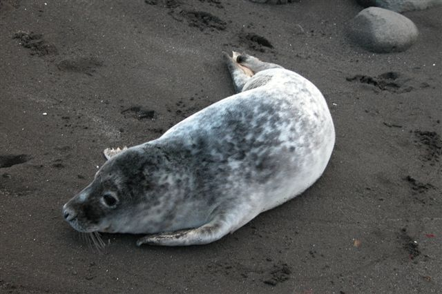

Grijze zeehond
De grijze zeehond of kegelrob (Halichoerus grypus) is een zeeroofdier uit de familie van de zeehonden (Phocidae). Het is na de gewone zeehond de meest algemene zeehond in de Nederlandse wateren. De dieren zijn van andere zeehonden te onderscheiden door hun rechte snuit. De soortaanduiding grypus betekent dan ook "haakneus". Grijze zeehonden zijn over het algemeen ook een stuk groter dan gewone zeehonden, en de grootste soort uit de onderfamilie Phocidae. Het is de enige soort uit het geslacht Halichoerus, wat letterlijk "zeezwijn" betekent.